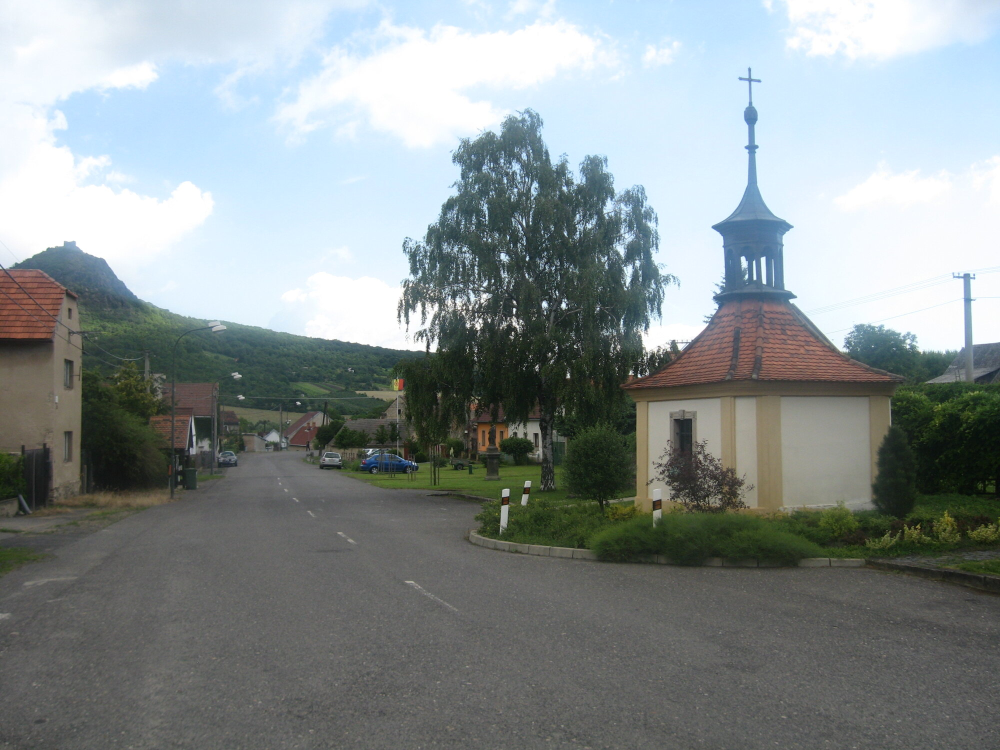
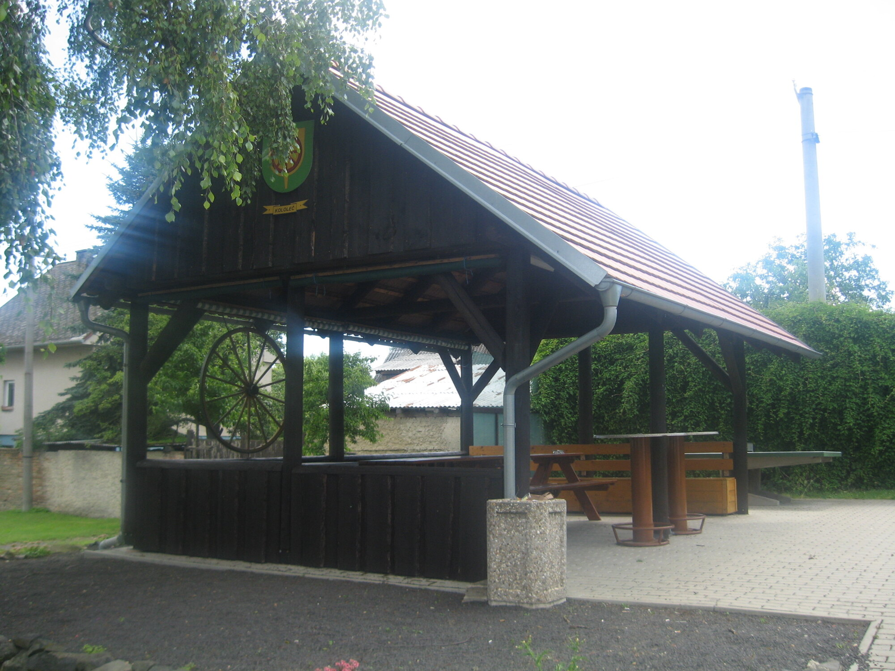
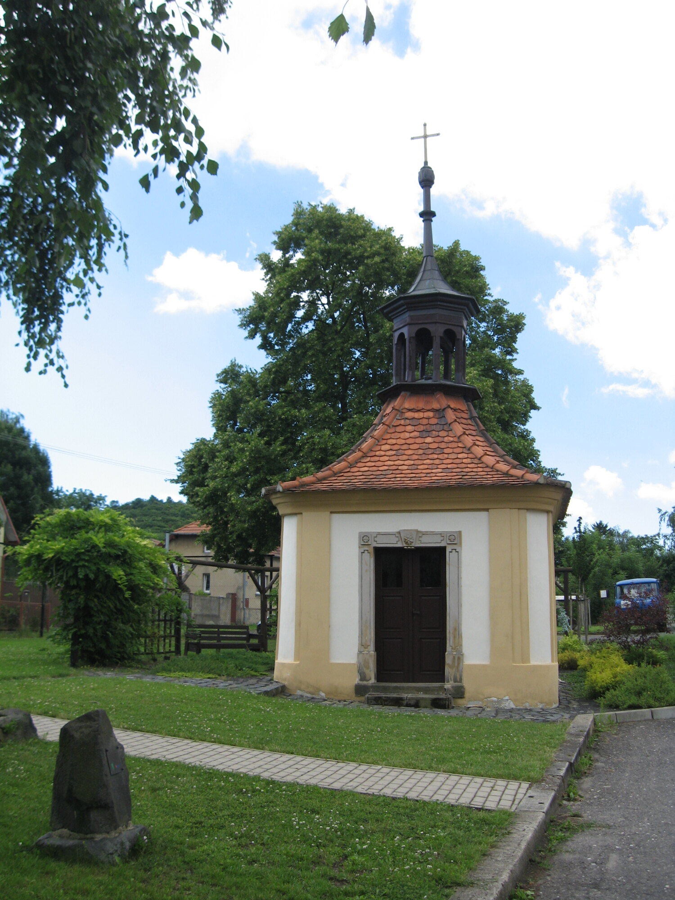
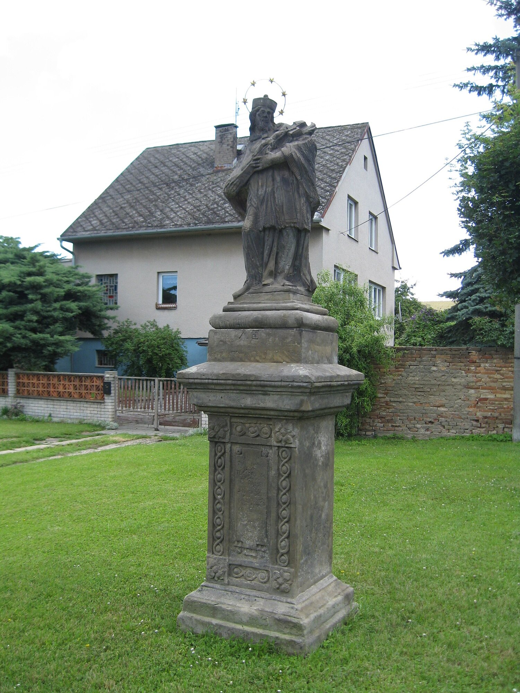

Ústecký kraj · okres Litoměřice
Kololeč
Malá vesnice v krajině Českého středohoří, jen kilometr západně od Třebenic.
O obci
Klidné místo nedaleko Třebenic
Kololeč je malá vesnice a část města Třebenice v okrese Litoměřice. Leží přibližně jeden kilometr západně od Třebenic. Stejný název nese také místní katastrální území.
Na návsi najdete kapličku, sochu svatého Jana Nepomuckého i zastřešené odpočívadlo. Vesnice si zachovává komorní venkovský charakter a přímý kontakt s krajinou Českého středohoří.

Historie
Příběh malé vsi napříč staletími
První písemná zmínka o Kololeči pochází z roku 1436. Výraznou součástí návsi je kaplička, jejíž doložené opravy a proměny zvonu připomínají péči místních obyvatel o společný prostor.
Podrobnější záznamy se dochovaly především ke kapličce. Díky nim lze sledovat její příběh od počátku 19. století až po novodobou rekonstrukci.
Časová osa
Vybrané milníky
-
První písemná zmínka
Nejstarší známá písemná zmínka o vesnici pochází z roku 1436.
-
Vznik kapličky
Barokní kaplička na návsi byla pravděpodobně postavena kolem roku 1800. Ze stejné doby zřejmě pochází také socha svatého Jana Nepomuckého.
-
Doložená oprava
Kaplička prošla opravou a do makovice na její vížce byly vloženy dobové dokumenty.
-
Nový zvon po první světové válce
Po rekvizici původního zvonu během války se obyvatelé složili na nový. Jeho slavnostní svěcení se konalo 5. června 1921.
-
Oprava ze sbírky občanů
Díky místní sbírce byly opraveny zdi, dveře, okna i střecha kapličky.
-
Druhá rekvizice a náhrada zvonu
Za druhé světové války byl zvon znovu zrekvírován. Nový zvon pořídil roku 1949 Otakar Přibyl.
-
Novodobá rekonstrukce
Kaplička prošla poslední uváděnou rekonstrukcí, která se dotkla mimo jiné oken a dveří.
Osobnosti
Rodáci z Kololeče
František Demel
Římskokatolický duchovní narozený v Kololeči.
Erhard Lipka
Pedagog a politik, který působil také jako poslanec Českého zemského sněmu a Říšské rady.
Pamětihodnosti
Místa, která tvoří náves
Dvě drobné památky připomínají historii i charakter obce.

01
Kaplička
Drobná sakrální stavba stojí přímo na návsi a tvoří přirozený střed vesnice.

02
Socha svatého Jana Nepomuckého
Kamenná socha na zdobeném podstavci patří mezi místní pamětihodnosti.
Galerie
Několik pohledů na Kololeč
Fotografie zachycují náves a její nejvýraznější místa.
V okolí
Co najdete nedaleko Kololeče
Kololeč je dobrý výchozí bod pro krátké procházky, výhledy i výlety po Českém středohoří.
Košťálov
Zřícenina hradu na výrazném vrchu nad Třebenicemi patří k nejhezčím orientačním bodům v krajině.
Třebenice
Historické město jen kousek od obce nabízí základní služby, muzeum českého granátu a napojení na další trasy.
Hazmburk
Dominantní dvojice věží láká na delší výlet za výhledy přes dolní Poohří a kopce Českého středohoří.
České středohoří
Okolní louky, sady a sopečné vrchy se hodí pro pomalé procházky, cyklistiku i nenáročné fotografování krajiny.
Mapa
Kde najdete Kololeč
Kololeč leží západně od Třebenic v okrese Litoměřice. Na mapě je vyznačena místní náves.
- Souřadnice
- 50°28′42″ s. š., 13°58′33″ v. d.
- Správní celek
- Třebenice · okres Litoměřice · Ústecký kraj
Užitečné odkazy